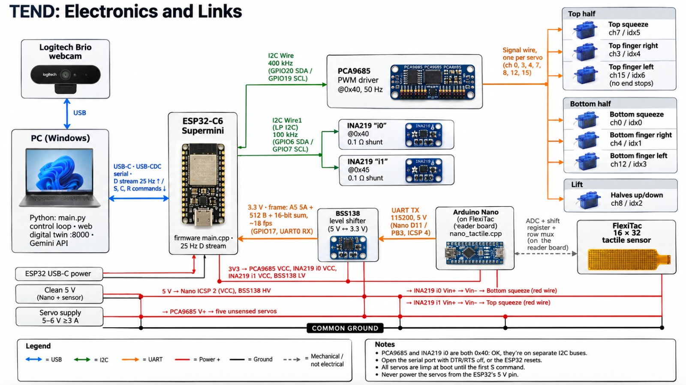
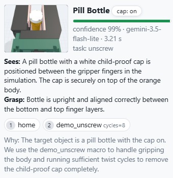
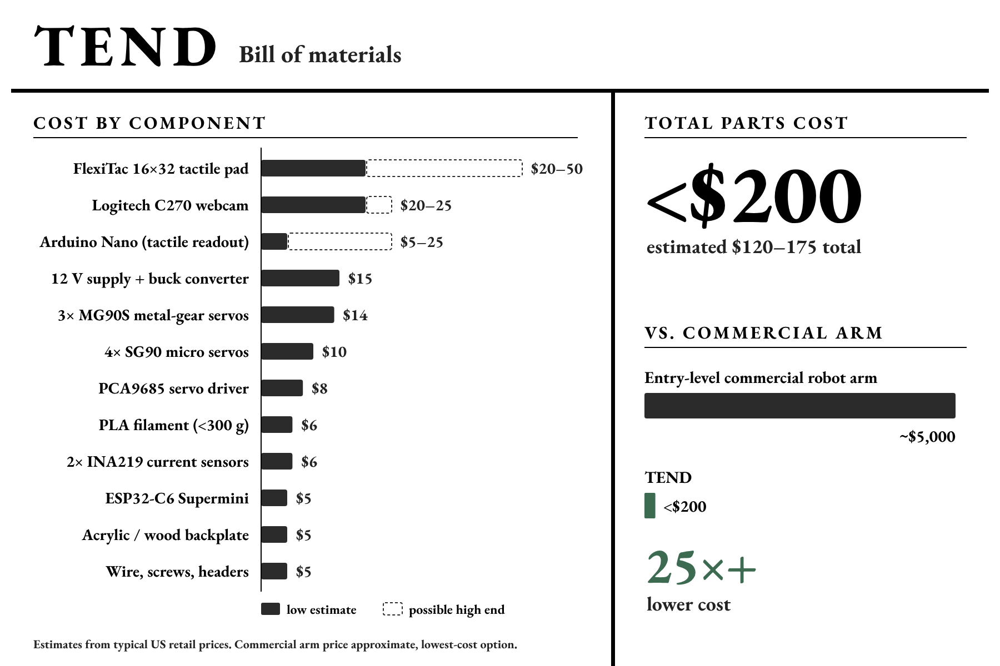
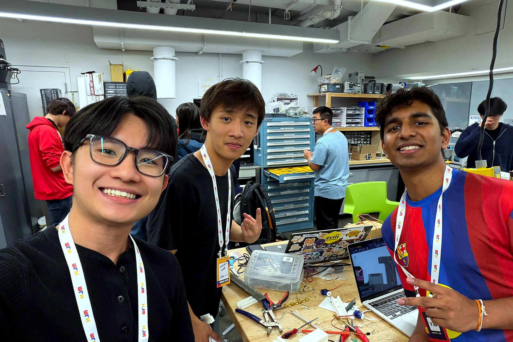

MakeCU 2026 Healthcare
A dexterous hand for the hands that need it.
Cartesian Gripper with Tactile & Vision Assistance
Why we built it
Opening a pill bottle often meant waiting for someone else to help.
Sources: CDC; Swedish Rheumatism Association survey
50M+
US adults have arthritis
23M
are limited in everyday activities
92%
with rheumatic conditions struggle to open medicine packaging
22%
struggle every single day
Assistive robot arms can cost
$35,000
Even the cheapest commercial arm is about $5,000.
So we built...
A Cartesian gripper whose four fingers each slide independently, so it can push, pull, twist, squeeze, and hold, guided by touch and vision.
Designed in Fusion 360, with 17 printed parts and a laser-cut stand.
The bottom two fingers grip the bottle steady.
The top two slide in opposite directions to turn the cap.
Release, recenter, and twist again until the cap is off.

16 × 32 array on the gripping finger, about 18 fps: where and how hard it presses
Servo current estimates loading, with an automatic cutoff

Identifies the object and picks each motion
Simulation: full routine, about 6 s per cycle
Prototype: hand-actuated, every sensor streaming live

01
02
03
A dexterous hand for the hands that need it.

“One bottle cap can decide whether someone takes their medication on their own, or waits for help.”